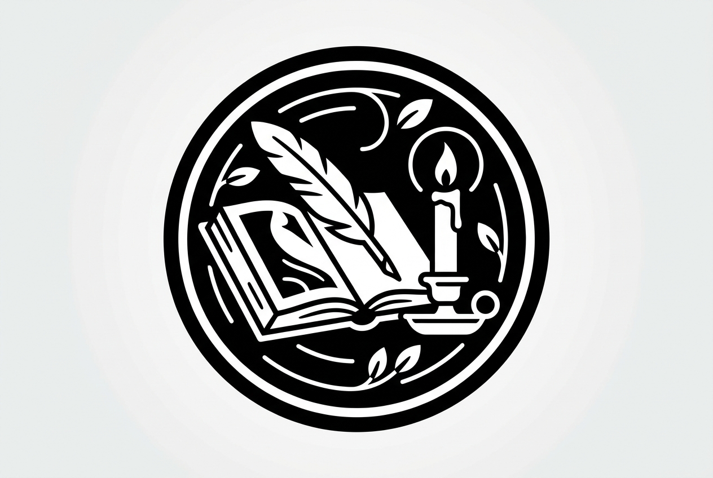

Wichtige Denker
- René Descartes: „Ich denke, also bin ich“ – Rationalismus.
- John Locke: Liberalismus, Eigentum und Menschenrechte.
- Thomas Hobbes: Gesellschaftsvertrag und Staatsphilosophie.
- Baruch Spinoza: Pantheismus und Ethik.
- David Hume: Empirismus und Skeptizismus.
- Jean-Jacques Rousseau: Naturzustand und Volkssouveränität.
Kerngedanken
Die Frühe Neuzeit stellt den autonomen, denkenden Menschen in den Mittelpunkt. Rationalität, Individualität und die Grundlagen moderner Staats- und Gesellschaftstheorien prägen diese Epoche.